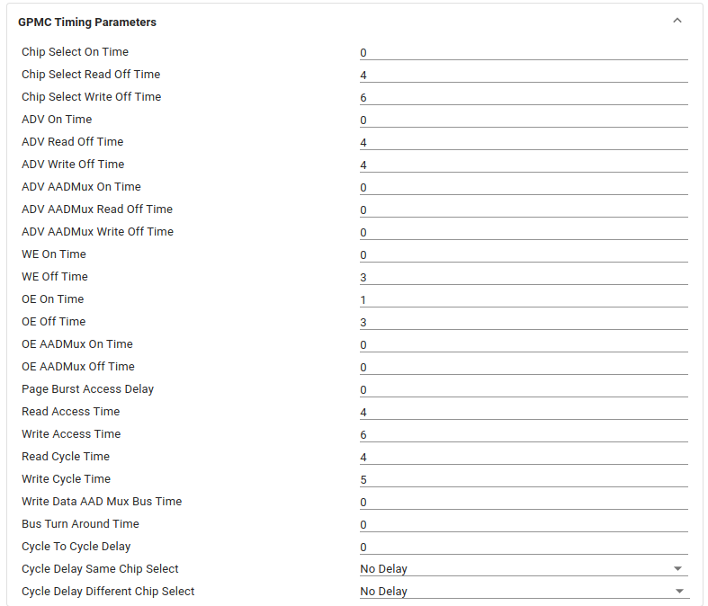

The General-Purpose Memory Controller (GPMC) is an unified memory controller dedicated to interfacing external memory devices like
- Asynchronous SRAM like memories and application specific integrated circuit devices
- Asynchronous, synchronous, and page mode burst NOR flash devices
- NAND flash
- Pseudo-SRAM devices
The Error Location Module (ELM) module works in conjunction with the GPMC and has the following main features: ECC calculations (up to 16-bit) for NAND support and ability to work in both page-based and continuous modes
- 4, 8, and 16 bits per 512-byte block error-location, based on BCH algorithms
- Eight simultaneous processing contexts
- Page-based and continuous modes
- Interrupt generation on error-location process completion
Features Supported
- Support for 8-bit NANDLIKE device.
- Supports up to 4 chip select regions of programmable size and programmable base addresses in a total address space of 1GB
- Supports on-the-fly error code detection using the Bose-Chaudhuri-Hocquenghem (BCH) 8-bit.
- Prefetch and write-posting engine associated with DMA controller at system level to achieve full performance from the NAND device with minimum effect on NOR/SRAM concurrent access
- Supports Prefetch read with CPU and DMA.
- Supports Post write with CPU.
- The clock to the external memory is provided from GPMC_FCLK divided by 1, 2, 3, or 4.
- Supports configurable timing parameters for NANDLIKE devices.
- Independent and programmable control signal timing parameters for setup and hold time on a per-chip select basis.
- Supports BOOT mode.
- Flexible synchrnonisation of NAND R/B signal with WAIT PINs.
SysConfig Features
- Note
- It is strongly recommend to use SysConfig where it is available instead of using direct SW API calls. This will help simplify the SW application and also catch common mistakes early in the development cycle.
- Set input clock frequency and clock divider.
- Set interrupt trigger type.
- Configuring pinmux based on selected pin.
- Enable or disable DMA (By default DMA is enabled).
- Configure GPMC timing parameters. (Default timing parameters are set for parallel nand device.)

GPMC Timimg Parameters Configuration
Features NOT Supported
- Multiple write access in asynchronous mode is not supported
- Multiple read access in asynchronous mode is not supported in address/data-multiplexed and AAD- multiplexed modes
- Interupt mode is not supported.
- Interface to NORLIKE or SRAM like devices not supported.
Example Usage
Include the below file to access the APIs
Instance Open Example
Instance Close Example
API
APIs for GPMC


 1.8.20
1.8.20